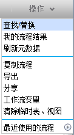
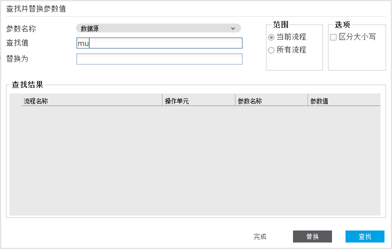

查找/替换
1.点击“操作”下拉菜单中的“查找/替换”按钮打开“查找并替换值”对话框

2.在该对话中，可以查找并替换当前Flow的指定参数名的值
参数名称包括 数据源、 模式名称、表名、输出模式
范围：用来选择查找值的范围，有两个选项（当前打开的流程、当前用户的所有流程）
区分大小写：选中该选项，查询时将大小写敏感
查找值：输入要查询的参数的值
替换为：输入将要替换的查询结果值。（注：替换的值必须是当前flow的一个备选值)
查找结果：将显示已经找到的符合查询条件的结果列表
